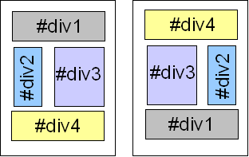
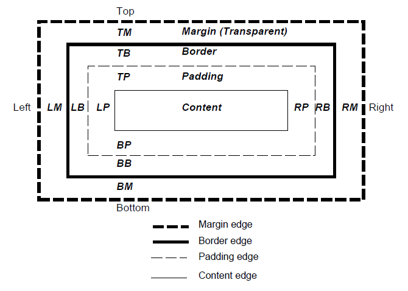

CSS
CASCADING STYLE SHEETS
ISEN Brest - CIR1
CSS
Description de la présentation d’une page Web
Séparation entre contenu et forme
- Adaptation à tout type de support (Ordinateur, smartphone, tablette, …)
- Evolution du design facilité : la modification d’un élément se répercute automatiquement sur toutes les pages du site
- Clarté du code
Paramètres classiques
- Couleurs
- Polices de caractères
- Bordures
- Visibilité des éléments
- ...
Agencement de la page
CSS 1
- définition des spécifications 1996
- pas intégré dans les navigateurs avant les années 2000
- définition d'une cinquantaine de propriétés
CSS 2
- définition des spécifications 1998
- amélioration de la présentation
- amélioration du positionnement
- feuilles de style par "media"
CSS 2.1
- correction de la version 2
- transition vers la version 3
CSS 3
- débute en 1999 parallèlement à CSS 2.1
- modulaire
Intégration du CSS au HTML
Lien vers un fichier externe avec la balise <link>
<head>
<link href="fichier.css" rel="stylesheet“ type="text/css">
</head>
Déclaration dans le fichier HTML via la balise <style>
<head>
<style type="text/css">
déclaration des styles
</style>
</head>
Déclaration dans l’élément HTML
<p style="text-align:center; color:red">Texte paragraphe</p>
Choix de la méthode de déclaration des styles
- Feuille de style externe (link) : Meilleure solution
- Style déclarés en interne (style) : Page possédant des styles particuliers
- Style comme attribut HTML : Mise en forme ponctuelle, fortement déconseillée
Feuille de styles utilisateurs
- Exemple d’utilisation : éviter d’avoir des éléments clignotants…
- Dans Firefox, créer un fichier
« chrome/userContent.css »dans votre répertoire profile
Les commentaires !
Comme en langage C ansi :
/* Ceci est un commentaire */
Structure
sélecteur {
propriété: valeur;
}
- Sélecteur : balise html (
body,h1,p, etc.), identifiant (id) ou classe (class) - Propriété : attribut à appliquer (
fontpour la police de caractères,backgroundpour la couleur de fond,marginpour la taille de la marge, etc.) - Valeur : caractéristique de la propriété
h1 {
font-weight: bold;
font-size: 2em;
color: red;
}
La cascade
Les propriétés finales d'un élément sont le mélange de plusieurs sources
- Les styles par défaut du navigateur
- Les styles définis par l'utilisateur
- Les styles liés au document par l'auteur (balise
<link>) - Les styles définis par l'auteur via la balise
<style> - Les styles définis par l'auteur via l'attribut
style
Le CSS permet de marquer certaines propriétés comme étant importantes. Cela casse la cascade naturelle.
body {
color: pink !important;
}
Ordre de la cascade
- Recherche des déclarations en fonction du type de média
- Tri primaire sur l’origine et le poids :
Utilisateur important > auteur important > auteur normal > utilisateur normal > agent - Tri secondaire sur le sélecteur :
Spécifiques > Généraux - Tri final : deux règles de même origine et spécificité, la dernière règle s’applique
L'héritage
Les éléments enfants héritent des propriétés de son parent (pour une grande majorité des propriétés).
Il est possible de forcer l'héritage avec l'attribut inherit.
Les sélecteurs
Règles fondamentales
- Nom d’éléments, classe, identifiant,…
- Cas de plusieurs sélecteurs par règle (séparation par une
« , »)
h1, h2, h3, h4, h5, h6 {
color: #009900;
font-family: Georgia, sans-serif;
}
Sélecteurs de type
Nom d'un élément HTML
h2 {
font-size: 150%;
}
Sélecteur universel
Caractère « * » : sélectionne toutes les balises du document
* {
font-family: arial;
}
Sélecteurs d'attributs
- Référence à un attribut d’un élément HTML
-
Attributs les plus couramment utilisés :
class: styles génériquesid: élément particulier de la page
Sélecteurs de classes
-
Application : éléments redondants dans la page
/* Champs d’action : tous les éléments de la classe */ .nom_de_classe { /* déclaration(s) */ } /* Champ d’action : un élément ciblé */ élément.nom_de_classe { /* déclaration(s) */ } -
Document HTML
<p class="nom_de_classe">...</p>
Sélecteurs d’identifiants
-
Application : élément unique dans la page
/* Champs d’action : tous les éléments de la classe */ #nom_id { /* déclaration(s) */ } /* Champ d’action : un élément ciblé */ élément#nom_id { /* déclaration(s) */ } -
Document HTML
<div id="nom_id">...</div>
Sélecteurs d'attributs
Règles en fonction de l’attribut d’un élément
| Syntaxe | Description |
|---|---|
[att] |
Tous les éléments contenant cet attribut |
[att]=val |
Tous les éléments dont l’attribut « att » vaut « val » |
[att]~=val |
Tous les éléments dont l’attribut « att » est une suite de mots donc « val » fait partie |
[att]|=val |
Tous les éléments dont l’attribut « att » vaut « val » ou commence par « val- » (pour les langues) |
Sélecteurs hierarchiques
Utilisation de la notion d’héritage des CSS pour réduire ou étendre le champ d’application de la règle
Sélecteurs de descendant
/* Affecte tous les éléments h1 compris dans l’élément d’identifiant isen */
#isen h1 {
…
}
/* Affecte tous les éléments h1 petits-enfants de l’élément d’identifiant isen */
#isen * h1 {
…
}
Sélecteurs d'enfant
#isen > h1 {
…
}
Sélecteurs de frère adjacent
/* Désigne un élément suivant directement un autre élément */
h1 + h2 {
…
}
Les pseudo-classes et les pseudo-éléments
- Pseudo-classes : classe les éléments selon des caractéristiques autres que leur nom, attribut ou contenu (Exemple : état d’un élément)
- Pseudo-éléments : accès à des éléments non spécifié dans l’arbre du document (Ex : la première lettre du contenu d’un élément)
Pseudo-classe :first-child
- Permet de spécifier tous les premiers éléments d’un autre éléments
- Exemple : Le premier paragraphe commence par une tabulation
div > p:first-child {
text-indent: 2em;
}
Pseudo-classes de liens
- Appliqué aux balises
<a href="..." -
Pseudo-classes :
:visited: lien visité:link: lien non visité
-
Exemple classique :
a:link { color: blue; } a:visited { color: purple; } -
Exemple original mais peu ergonomique :
a:link { text-decoration: none; } a:visited { text-decoration: line-through; }
Pseudo-classes dynamiques
:hover: effective lorsque l’utilisateur désigne l’outil (ex : survol de la souris) sans l’activer:active: effective lorsque l’utilisateur active l’élément (ex : click de la souris):focus: effective lorsqu’un élément a le focus
Pseudo-classe :lang
- Style appliqué en fonction de la langue spécifiée par l’attribut lang
-
Usage
:lang/* Guillemets différents en français et en anglais */ :lang(en) {quotes:"\AB\A0" "\A0\BB" "\201C\A0" "\A0\201D";} :lang(fr) {quotes:"\201C" "\201D" "\2018" "\2019";}
Pseudo-élement :first-line
S’applique à la première ligne d’un élément
/* 1ère ligne en majuscule*/
pre:first-line { text-transform: uppercase }
Pseudo-élement :first-letter
S’applique à la première lettre d’un élément
/* 1ère lettre en majuscule*/
p { font-size: 12pt; line-height: 12pt }
p:first-letter { font-size: 200%; font-style: italic;
font-weight: bold; float: left }
Pseudo-élément :before et :after
- Ajout de contenu avant et après un élément
-
Exemples :
- Numéros avant les titres
- Copyright en fin de page
- ...
Pseudo-élément :before et :after
/* Pseudo-élément :before */
h2 {
counter-reset: chapter;
}
h3:before {
content: counter(chapter) ".";
counter-increment: chapter;
}
/* Pseudo-élément :after */
html:after {
color: white;
content: "Copyright @isen 2010";
}
Les valeurs et les unités
Unités (distances et dimensions)
- Aucun blanc entre le nombre et l’unité
- Longueur peut-être précédée d’un + ou -
Unités absolues
Indépendantes du format de sortie
| Unité | Description |
|---|---|
cm |
Centimètre |
in |
Pouce (2,54 cm) |
mm |
Millimètre |
pt |
Point (1/72in = 0,352778 mm) |
pc |
Pica (correspond à 12 pt = 4,233 mm) |
Unités relatives
Relatives à l’élément parent
| Unité | Description |
|---|---|
em |
Unité relative à la taille de police de l’élément sélectionné |
ex |
Unité relative à la hauteur de la lettre "x" en minuscule de l’élément sélectionné |
px |
Pixel : rendu dépend de la résolution du périphérique d’affichage |
% |
Unité relative à la taille de l’élément |
Nouvelles unités (2013)
| Unité | Description |
|---|---|
rem |
"root em" équivalent à em mais par rapport à l'élément racine du document (pas d'héritage) |
vw |
1/100e de la largeur de la fenêtre |
vh |
1/100e de la hauteur de la fenêtre |
vmin |
minimum entre vh et vw |
vmax |
maximum entre vh et vw |
Choix des unités
-
Préférer les unités relatives aux unités absolues
- Adaptation suivant les préférences des utilisateurs
- L’utilisation d’unités relatives pour le dimensionnement des blocs permet de s’adapter à toute taille d’écran
-
emet%(recommandés par le W3C) : s’adapte aux choix de l’utilisateur (exemple : malvoyants) -
pt: le plus proche des logiciels de traitement de texte
Les couleurs
Plusieurs façons de les spécifier (R : Rouge, V : Vert, B : Bleu)#RVBoù R,V et B sont des chiffres hexadécimaux entre 0 et F#RRVVBBoù R,V et B sont des nombres hexadécimaux entre 00 et FFrgb(R, V, B)où R, V et B sont des nombres décimaux entre 0 et 255rgb(R%, V%, B%)où R, V et B sont des nombres décimaux entre 0 et 100 (pourcentage)- Mot-clé : 17 sont officiellement reconnus (
aqua, black, blue, fuchsia, gray, green, lime, maroon, navy, olive, orange, purple, red, silver, teal, white, et yellow)
Le modèle de boite
Composition d'un boite
Lien entre les zones et les propriétés
| Zone (desc) | Zone | Propriétés | Valeurs |
|---|---|---|---|
| Contenu | Content | width, height | <longueur>, % ou auto |
| Rembourrage (entre le contenu et la bordure) | Padding | padding-top, padding-right, padding-bottom, padding-left, padding | <longueur>, % ou auto |
| Bordure | Border | border-top-width, border-right-width, border-bottom-width, border-left-width, border-width | <longueur>, thin, medium, thick |
| border-top-color, border-right-color, border-bottom-color, border-left-color, border-color | <color>, transparent, inherit | ||
| border-top-style, border-right-style, border-bottom-style, border-left-style, border-style | None, hidden, dotted, dashed, solid, double, groove, ridge, inset, outset | ||
| border-top, border-right border-bottom, border-left, border | <border-width> <border-style> <border-color> | ||
| Marge (entre la bordure et l’extérieur) | Margin | margin-top, margin-right, margin-bottom, margin-left | <longueur>, % ou auto |
Effets visuels
| Propriété | Description | Valeur | Description valeur |
|---|---|---|---|
| overflow | Cas où le contenu dépasse de la boite | visible | Ce qui dépasse est affiché |
| hidden | Ce qui dépasse n’est pas affiché | ||
| scroll | Barre de défilement pour accéder à ce qui dépasse | ||
| auto | Laisse le navigateur le choix | ||
| clip | Définit la partie visible de la boite | auto | Tout est visible |
| <shape> | Rect(<top>, <right>, <left>, <bottom> | ||
| visibility | visible | Boite visible | |
| hidden | Boite cachée | ||
| collapse | Barre de défilement pour accéder à ce qui dépasse |
Pour aller plus loin
| Propriété | Description | Valeur |
|---|---|---|
| min-width, max-width | Largeur minimal et maximal (cas où la largeur s’adapte au contenu) | <longueur>, <pourcentage> |
| min-height, max-height | Hauteur minimal et maximal (cas où la hauteur s’adapte au contenu) | <longueur>, <pourcentage> |
| line-height | Hauteur de la ligne (différent de la hauteur du contenu…) | normal, <nombre><longueur>, <pourcentage> |
| vertical-align | Alignement vertical à l’intérieur de la boite | baseline, sub, super, top, text-top, middle, bottom, text-bottom, <pourcentage>, <longueur> |
Les types de media
Principe
- Définition de styles différents en fonction du média utilisé
-
Types de média :
all,aural,braille,embossed,handheld,print,projection,screen,tty,tv
Spécifier le style en fonction du media
-
Lien vers une feuille de style CSS :
@import url("style-impression.css") print; -
Dans l’en-tête HTML : attribut media de l’élément link
<link rel="stylesheet" type="text/css" media="print, handheld" href="style-impression.css"> -
Dans l’en-tête HTML : attribut media de l’élément link
@media print { /* la feuille de style pour l'impression vient ici */ }
Les propriétés
Avant et arrière plan
| Catégorie | Propriété | Description | Valeurs |
|---|---|---|---|
| Avant-plan | color | couleur du texte | Couleur |
| Arrière-plan | background-color | couleur de fond | Couleur, transparent |
| Arrière-plan (image) | background-image | Image de fond | uri, none |
| background-repeat | Répétition de l’image de fond | repeat, repeat-x, repeat-y, no-repeat | |
| background-attachment | Image fixe ou non | scroll, fixed | |
| background-position | Position initiale de l’image | Voir les positions | |
| background | Réunion des 4 précédents |
Polices de caractères
| Propriété | Description | Valeurs |
|---|---|---|
| font-family | Type de police | Nom de la police, Nom générique (serif, sans-serif, cursive, fantasy, monospace) |
| font-style | Style | normal, italic, oblique |
| font-weight | Epaisseur des caractères | uri, none |
| font-size | Taille des caractères | Voir Valeurs et unités |
| font-variant | Minuscules sous forme de majuscules en taille réduite | normal | small-caps |
Texte
| Propriété | Description | Valeurs |
|---|---|---|
| text-indent | Espacement de la 1ère ligne | Longueur, pourcentage |
| text-align | Alignement du texte | Left, right, center, justify |
| text-decoration | Effets | none, underline, overline, line-through, blink |
| letter-spacing | Espace entre 2 caractères | Normal, longueur |
| word-spacing | Espace entre 2 mots | Normal, longueur |
| text-transform | Majuscules, minuscules | Capitalize, uppercase, lowercase, none |
| white-space | Rendu des espaces | normal, pre, nowrap, pre-wrap, pre-line |
Tables
| Propriété | Description | Valeurs |
|---|---|---|
| caption-side | Position de la légende | Longueur, pourcentage |
| vertical-align | Alignement de la ligne | Baseline, top, bottom, middle |
| text-align | Alignement horizontal | Left, middle, right, "caractère" |
| border-collapse | Modèles de bordure | collapse (spécifie les bordures entièrement ou en partie : attention aux conflits), separate |
| border-spacing (separate) | Espace entre les bordures de 2 cellules | longueur, longueur |
| empty-cells (separate) | Bordures autour des cellules sans contenu |
Modèle de tables
| Valeur de la propriété display | Description | CSS par défaut pour les éléments HTML |
|---|---|---|
| table | Table de type bloc | table |
| inline-table | Table de type en ligne | |
| table-row | Une ligne de cellules | tr |
| table-row-group | Plusieurs lignes | tbody |
| table-header-group | Plusieurs lignes (1ères lignes) | thead |
| table-footer-group | Plusieurs lignes (dernières lignes) | tfoot |
| table-column | Colonne de cellules | tcol |
| table-column-group | Plusieurs colonnes | colgroup |
| table-cell | Une cellule | td, th |
| table-caption | Légende de la table | caption |
Le curseur (appareil de pointage)
Propriété ‘cursor’ :
| Valeur | Description |
|---|---|
| auto | Choix au navigateur |
| crosshair | Croix |
| default | Souvent la flèche |
| pointer | Doigt indiquant un lien |
| move | Objet déplaçable |
| e-resize, ne-resize, nw-resize, n-resize, se-resize, sw-resize, s-resize, w-resize | Bord ou coin d’un objet pouvant être retaillé |
| text | Possibilité de sélectionner un texte ( | ) |
| wait | Programme en attente (montre, sablier,…) |
| help | Aide disponible (? Ou bulle,…) |
| <uri> | Curseur chargé à partir de l’URI |
Le positionnement des éléments
Blocs conteneurs
- Conteneur : élément de forme rectangulaire (ex : div) dans lequel se trouvent d’autres éléments
- Positions et tailles calculées en fonction des bords du conteneur
- Possibilité de débordement du conteneur
-
Possibilité de spécifier :
- La largeur du bloc : width
- La hauteur du bloc : height
Balises de bloc et balise en ligne
Elément de type Bloc (block) : grandes structures contenant d’autres blocs, éléments texte ou du texte (titres, paragraphes, tables,…)
- Agencement : l’un en dessous l’autre (succession verticale)
- Occupe par défaut toute la largeur disponible de son conteneur
- Bord gauche touche le bord gauche de son conteneur
Elément de type en ligne (inline) : petites structures contenant d’autres éléments texte ou du texte (hyperliens, citations, images,…)
- Agencement : l’un après l’autre (succession horizontale)
- Si dépassement : passage à la ligne
Propriété display
Cette propriété permet de forcer le type des éléments (blocs ou en ligne) :
- block : élément de type bloc
- inline : élément de type inline
- inline-block: élément en ligne avec largeur,…
- run-in : l’élément suivant sera du même type
Hiérarchie
- Imbrication des éléments les uns dans les autres
-
- Ancêtre : élément contenant un élément ou une hiérarchie d’éléments
- Parent : élément contenant directement un autre élément
- Enfant : élément directement contenu dans un autre élément
- Frères : éléments ayant le même parent
Schémas de positionnement
Flux normal
- Les éléments sont positionnés les uns après les autres
- Enchainements dépendent du type d’éléments (bloc ou en ligne)
Flottants
- Elément positionné selon le flux normal puis extirpé et repoussé le plus possible à gauche, droite, haut,…
Positionnement absolu
- Retiré du flux normal
- Position fonction du bloc conteneur
- Pas d’influence sur les éléments de même parenté
Positionnement relatif
- Permet de décaler un élément par rapport au flux normal
- Détermination de l’emplacement dans le flux normal puis déplacement relatif par rapport à cette position
- Pas d’influence sur la position de l’élément suivant (comme s’il n’y avait pas eu de décalage) : possibilité de chevauchement des éléments
Propriété position
Position calculée à partir des propriétés "position" et "float"
Valeurs possible de la propriété position
-
static :
- flux normal
-
relative :
- calcul selon le flux normal + déplacement relatif
- emplacement de l’élément suivant non impacté
Valeurs possible de la propriété position
-
absolute :
- calcul de la position à l’aide des propriétés ‘left’, ‘right’, ‘top’ et ‘bottom’
- déplacement relatifs au bloc conteneur
- élément en dehors du flux normal : pas d’influence sur les autres éléments
-
fixed :
- calcul comme absolute
- fixe par rapport à la fenêtre du navigateur : bouge pas lors du défilement
Propriétés ‘top’, ‘right’, ‘left’, ‘bottom’
Signification :
- top : décalage de l’élément par rapport au bord ‘haut’ du conteneur
- right : décalage de l’élément par rapport au bord ‘droite’ du conteneur
- left : décalage de l’élément par rapport au bord ‘gauche’ du conteneur
- décalage de l’élément par rapport au bord ‘bas’ du conteneur
Propriétés ‘top’, ‘right’, ‘left’, ‘bottom’
Valeurs possibles :
- Longueur : distance
- Pourcentage : pourcentage de la largeur (ou hauteur) du conteneur
- Auto
- Inherit
Flottant
Positionnement : déplacement vers la gauche ou vers la droite sur la ligne courante
Flottant
Propriétés :
-
Le contenu peut s’écouler le long de ses flancs :
- Ecoulement le long du flanc droite pour une boite flottante à gauche
- Ecoulement le long du flanc gauche pour une boite flottante à droite
- Les marges ne fusionnent pas avec les boites adjacentes
- Un flottant peut chevaucher les boites du flux normal
Flottant : propriétés
Propriété ‘float’ (ne s’applique pas aux boites en position absolue) :
- left : bloc flottant à gauche
- right : bloc flottant à droite
- none : pas de flottement
Flottant : propriétés
Propriété ‘clear’ :
- left : bord haut de la boite situé juste sous le bord bas d’une boite flottante gauche
- right : bord haut de la boite situé juste sous le bord bas d’une boite flottante droite
- both : boite placé sous les boites flottantes gauche et droite
- none : pas de contraintes vis-à-vis des flottants
Quel type de positionnement utiliser ?
- Flux normal avec les marges et le padding
- Modification de la propriété
display(block, inline, inline-block, none,…) - Blocs côte à côte : propriété
float
Centrage des éléments
- Horizontal :
text-align - Vertical : tableau de mise en page (actuellement), display: table-cell avec la propriété vertical-align: middle (bientôt)
Quel type de positionnement utiliser ?
Positionnement absolu :
- Savoir positionner un élément en absolu par rapport à son parent ou ancêtre positionné
- Anticiper les éventuels problèmes de chevauchement de contenu
- Connaître le contenu au préalable (si la taille varie risque de débordement)
Positionnement relatif :
- Décaler un élément de sa position normal pour produire un effet visuel
- Référent pour les éléments descendants positionnés en absolu
Positionnement fixe :
- Plus rare
Superposition
- Existence d’une troisième dimension (profondeur)
- Permet de superposer des éléments
-
Propriété :
z-indexdont les valeurs possibles sont :- Un entier : indique le niveau de profondeur
- auto : même niveau que l’élément parent
Les nouveaux modes de positionnement CSS
CSS grid
<div id="div1">Div 1</div>
<div id="div2">Div 2</div>
body {
display: grid;
grid-template-columns: 200px 400px;
}
div#div1 {
grid-column: 1; /* placement en colonne 1 */
}
div#div2 {
grid-column: 2; /* placement en colonne 2 */
}
<div id="div1">Div 1</div>
<div id="div2">Div 2</div>
<div id="div3">Div 3</div>
<div id="div4">Div 4</div>
body {
display: grid;
grid-template-columns: 200px 200px;
grid-template-rows: 200px 300px;
}
div#div1 {
grid-column: 1; grid-row: 1;
}
div#div2 {
grid-column: 2; grid-row: 1;
}
div#div3 {
grid-column: 1; grid-row: 2;
}
div#div2 {
grid-column: 2; grid-row: 2;
}
| Propriété | Détais |
|---|---|
grid, inline-grid |
Déclaration de la grille |
grid-template-area |
Déclaration d'un "canevas" de cellules |
grid-template-rows, grid-template-columns |
Déclaration des dimensions de lignes et colonnes |
grid-row, grid-column |
Placement d'un élément |
grid-gap, grid-column-gap, grid-row-gap |
Espaces entre les colonnes et les rangées |
align-items, justify-items |
Alignement horizontal ou vertical |
align-self, justify-self |
Alignement horizontal ou vertical d'éléments distincts |
| Unités | Détais |
|---|---|
px, %, em, rem |
Pixels, pourcentages, em,… (unités courantes) |
fr |
Fraction de l'espace restant |
min-content |
Largeur (ou hauteur) de l'élément le plus petit |
max-content |
Largeur (ou hauteur) de l'élément le plus grand |
minmax(min, max) |
Définit un min et un max |
auto |
Adaptation à la largeur (ou hauteur) du contenu |
Et aussi...
- Centrage des éléments.
- Span
- Répétition
CSS flex
<ul>
<li>Item 1</li>
<li>Item 2</li>
<li>Item 3</li>
<li>Item 4</li>
</ul>
ul {
border: 1px dotted blue;
display: flex;
list-style-type: none;
}
li {
border: 1px solid red;
}
<ul>
<li>Item 1</li>
<li>Item 2</li>
<li>Item 3</li>
<li>Item 4</li>
</ul>
ul {
border: 1px dotted blue;
display: flex;
list-style-type: none;
flex-direction: column;
}
li {
border: 1px solid red;
}
Et aussi...
- Réordonnancement des éléments.
- Wrap
On utilise :
- le grid pour la disposition globale de la page
- le flex pour un ensemble d'élements identiques
Des questions ?